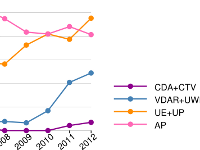

A Systematic Review on the Practice of Evaluating Visualization

Venue. TVCG (2013)
Authors. Tobias Isenberg, Petra Isenberg, Jian Chen, Michael Sedlmair, Torsten Möller
Abstract. We present an assessment of the state and historic development of evaluation practices as reported in papers published at the IEEE Visualization conference. Our goal is to reflect on a meta-level about evaluation in our community through a systematic understanding of the characteristics and goals of presented evaluations. For this purpose we conducted a systematic review of ten years of evaluations in the published papers using and extending a coding scheme previously established by Lam et al. [2012]. The results of our review include an overview of the most common evaluation goals in the community, how they evolved over time, and how they contrast or align to those of the IEEE Information Visualization conference. In particular, we found that evaluations specific to assessing resulting images and algorithm performance are the most prevalent (with consistently 80-90% of all papers since 1997). However, especially over the last six years there is a steady increase in evaluation methods that include participants, either by evaluating their performances and subjective feedback or by evaluating their work practices and their improved analysis and reasoning capabilities using visual tools. Up to 2010, this trend in the IEEE Visualization conference was much more pronounced than in the IEEE Information Visualization conference which only showed an increasing percentage of evaluation through user performance and experience testing. Since 2011, however, also papers in IEEE Information Visualization show such an increase of evaluations of work practices and analysis as well as reasoning using visual tools. Further, we found that generally the studies reporting requirements analyses and domain-specific work practices are too informally reported which hinders cross-comparison and lowers external validity.